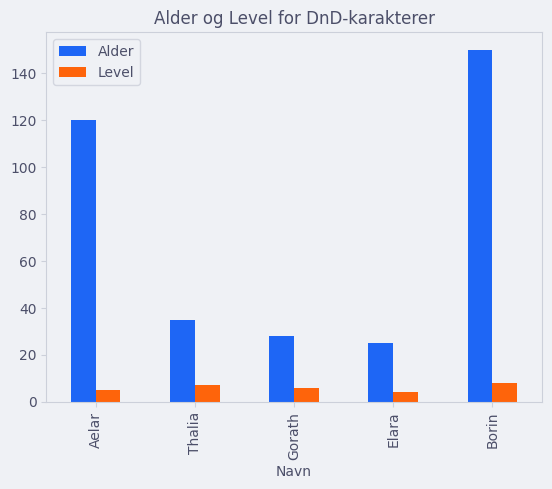
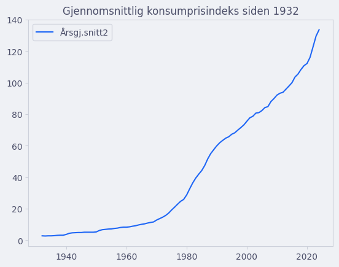
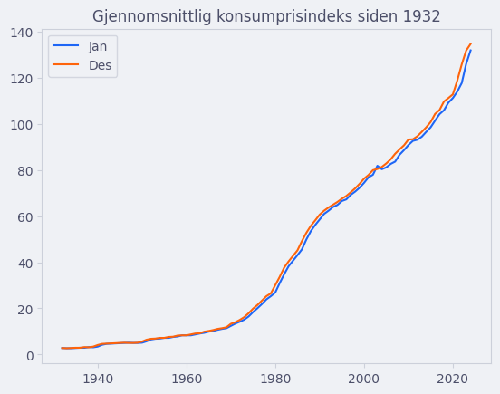

Reelle datasett#
Vi har å dele opp og analysere datafiler, men det finnes verktøy som gjør denne jobben enda enklere.
Med pandas er det å åpne og analysere datafiler en lek, men før vi ser på datafilene, må vi bli kjent med DataFrame-objekter.
Dataframes#
Den viktigste datatypen fra pandas er DataFrame.
En dataframe er en ordbok hvor nøklene er navn for kolonner, og verdiene er data i hver kolonne.
import pandas as pd
data = {
'Navn': ['Aelar', 'Thalia', 'Gorath', 'Elara', 'Borin'],
'Class': ['Ranger', 'Wizard', 'Barbarian', 'Rogue', 'Cleric'],
'Alder': [120, 35, 28, 25, 150],
'Rase': ['Elf', 'Human', 'Half-Orc', 'Halfling', 'Dwarf'],
'Level': [5, 7, 6, 4, 8]
}
df = pd.DataFrame(data)
print(df)
Navn Class Alder Rase Level
0 Aelar Ranger 120 Elf 5
1 Thalia Wizard 35 Human 7
2 Gorath Barbarian 28 Half-Orc 6
3 Elara Rogue 25 Halfling 4
4 Borin Cleric 150 Dwarf 8
Kolonner#
Man kan hente all data fra en kolonne ved å bruke kolonnens navn.
print(df["Navn"])
print()
print(list(df["Navn"]))
0 Aelar
1 Thalia
2 Gorath
3 Elara
4 Borin
Name: Navn, dtype: object
['Aelar', 'Thalia', 'Gorath', 'Elara', 'Borin']
Rader#
Man kan hente en spesifikk rad ved å bruke iloc().
print(df.iloc[4])
Navn Borin
Class Cleric
Alder 150
Rase Dwarf
Level 8
Name: 4, dtype: object
Filtrering#
Man kan også enkelt filtrere resultater.
print(df[df["Level"] >= 6]) # Henter ut alle som har level større enn eller likt 6
Navn Class Alder Rase Level
1 Thalia Wizard 35 Human 7
2 Gorath Barbarian 28 Half-Orc 6
4 Borin Cleric 150 Dwarf 8
Man kan også sette sammen flere filter ved å bruke tupler.
print(df[(df["Alder"] > 30) & (df["Alder"] <= 130)])
Navn Class Alder Rase Level
0 Aelar Ranger 120 Elf 5
1 Thalia Wizard 35 Human 7
Gjennomsnitt og sum#
Gjennomsnitt og sum finner man også lett.
print(f"Gjennomsnittlig alder: {df['Alder'].mean()} år")
print(f"Sum av hvert level: {df['Level'].sum()}")
Gjennomsnittlig alder: 71.6 år
Sum av hvert level: 30
Sortering#
Man kan sortere en DataFrame etter verdier.
print(df.sort_values(by="Alder", ascending=False))
Navn Class Alder Rase Level
4 Borin Cleric 150 Dwarf 8
0 Aelar Ranger 120 Elf 5
1 Thalia Wizard 35 Human 7
2 Gorath Barbarian 28 Half-Orc 6
3 Elara Rogue 25 Halfling 4
Plotting#
Det er også innebygd matplotlib-funksjonalitet i pandas.
import pandas as pd
import matplotlib.pyplot as plt
df.plot(x="Navn", y=["Alder", "Level"], kind="bar", title="Alder og Level for DnD-karakterer")
plt.show()

Vi kan også plotte data over tid som et linjediagram. La oss se på en datafil fra SSB som viser konsumprisindeksen fra \(1932\) og frem til nå.
Du kan laste ned datafilen her.
;Årsgj.snitt2;Jan;Feb;Mar;Apr;Mai;Jun;Jul;Aug;Sep;Okt;Nov;Des
2024;133,6;132,0;132,3;132,6;133,7;133,5;133,8;134,5;133,3;133,7;134,5;134,9;134,8
2023;129,6;126,1;126,6;127,6;129,0;129,6;130,4;130,9;129,9;129,8;131,1;131,8;131,9
2022;122,8;117,8;119,1;119,8;121,2;121,5;122,6;124,2;123,9;125,6;126,0;125,8;125,9
2021;116,1;114,1;114,9;114,6;115,0;114,9;115,3;116,3;116,3;117,5;117,2;118,1;118,9
Vi ser at separatoren er semikolon ";" og at det brukes komma "," som desimaltegn. Datafilen har ikke et navn for første kolonne, fordi den er ment for å være indeksen til hvert sett med data. For å spesifisere dette kan vi bruke index_col-argumentet til read_csv().
import pandas as pd
import matplotlib.pyplot as plt
df = pd.read_csv("konsumprisindeks.csv", sep=";", decimal=",", index_col = 0)
df.plot(kind="line", y=["Årsgj.snitt2"], title="Gjennomsnittlig konsumprisindeks siden 1932")
plt.show()

Vi kan også plotte flere plott i samme figur. La oss si at vi ønsker å sammenlikne KPI i januar med KPI i desember hvert år.
import pandas as pd
import matplotlib.pyplot as plt
df = pd.read_csv("konsumprisindeks.csv", sep=";", decimal=",", index_col = 0)
df.plot(kind="line", y=["Jan", "Des"], title="Gjennomsnittlig konsumprisindeks siden 1932")
plt.show()

Lagre filer#
Når man har en dataframe, kan man enkelt lagre den som en .csv eller .json-fil.
df.to_csv("adventurers.csv", index=False)
df.to_json("adventurers.json", index=False)
Telle opp#
Man kan telle opp hvor mange det er av hver kategori ved å bruke value_counts()-metoden
import pandas as pd
data = {
"ID" : ['ha81po', '4p2186', 'xpa1jx', '62gb2p', 'goh8ag', 'gxpbjj'],
"Parkert" : ["10:31", "09:34", "12:45", "09:45", "08:30", "08:46"],
"Type" : ["Bil", "ELBil", "Bil", "Bil", "ELBil", "Motorsykkel"],
"Dratt" : ["12:32", "16:32", "14:54", "12:34", "15:31", "15:47"],
"Besøk" : [32, 45, 34, 1, 50, 127],
"Tid" : ["02:01", "06:58", "02:09", "02:49", "07:01", "07:01"]
}
df = pd.DataFrame(data)
print(df["Type"].value_counts())
Type
Bil 3
ELBil 2
Motorsykkel 1
Name: count, dtype: int64
Største og minste verdier#
Man kan finne de n største eller minste verdiene med nsmallest- og nlargest.
print("=== Flest besøk ===")
print(df.nlargest(3, "Besøk")) # De tre bilene som har besøkt hyppigst.
print("=== Færrest besøk ===")
print(df.nsmallest(2, "Besøk")) # De to bilene som har besøkt minst
=== Flest besøk ===
ID Parkert Type Dratt Besøk Tid
5 gxpbjj 08:46 Motorsykkel 15:47 127 07:01
4 goh8ag 08:30 ELBil 15:31 50 07:01
1 4p2186 09:34 ELBil 16:32 45 06:58
=== Færrest besøk ===
ID Parkert Type Dratt Besøk Tid
3 62gb2p 09:45 Bil 12:34 1 02:49
0 ha81po 10:31 Bil 12:32 32 02:01
Man kan også bruke disse på kolonner for å bare få verdiene.
print(df["Besøk"].nlargest(3))
5 127
4 50
1 45
Name: Besøk, dtype: int64
Manglende data#
Noen ganger mangler vi data, som i DataFramen over. Vi kan droppe rader som ikke har gyldig data med dropna()-metoden.
print(df["Dratt"].dropna()) # Får bare tidene som har data. Dropper de som er tomme.
0 12:32
1 16:32
2 14:54
3 12:34
4 15:31
5 15:47
Name: Dratt, dtype: object
Noen ganger ønsker vi å fylle de tomme plassene med noe. Da bruker vi fillna()-metoden.
print(df["Dratt"].fillna("23:59"))
0 12:32
1 16:32
2 14:54
3 12:34
4 15:31
5 15:47
Name: Dratt, dtype: object
Skrive ut bare noen kolonner#
Vi kan også skrive ut bare noen kolonner ved å indeksere i en DataFrame med en liste over kolonnenes navn.
print(df[["ID", "Besøk"]])
ID Besøk
0 ha81po 32
1 4p2186 45
2 xpa1jx 34
3 62gb2p 1
4 goh8ag 50
5 gxpbjj 127
Lage løkke gjennom liste#
Vi kan lage løkker som går gjennom vår DataFrame for å regne ut nye ting. La oss si at prisen for parkeringen er \(0.2\) kr per minutt og at vi ønsker å legge til en ny kolonne df["Pris"].
For å lage en løkke gjennom en DataFrame kan vi bruke iterrows()-metoden. Denne gir oss en indeks og så en Series med all data i hver rad.
# Lager liste over verdier som skal legges til
pris_liste = []
# Får data fra iterrows
for indeks, rad in df.iterrows():
timer = int(rad["Tid"].split(":")[0])
minutter = int(rad["Tid"].split(":")[1])
pris = (timer * 60 + minutter) * 0.2
pris_liste.append(pris)
# Lager ny kolonne
df["Pris"] = pris_liste
print(df)
ID Parkert Type Dratt Besøk Tid Pris
0 ha81po 10:31 Bil 12:32 32 02:01 24.2
1 4p2186 09:34 ELBil 16:32 45 06:58 83.6
2 xpa1jx 12:45 Bil 14:54 34 02:09 25.8
3 62gb2p 09:45 Bil 12:34 1 02:49 33.8
4 goh8ag 08:30 ELBil 15:31 50 07:01 84.2
5 gxpbjj 08:46 Motorsykkel 15:47 127 07:01 84.2
Lage ny kolonne#
I forrige eksempel laget vi en ny kolonne ved å kjøre en løkke gjennom data. For store datasett kan dette være ganske tregt. For enkle operasjoner som å legge sammen er det raskere å bruke innebygd Pandas.
import pandas as pd
data = {
"År" : [2001, 2002, 2003],
"Fødte" : [3004, 2345, 1301],
"Innflyttere" : [3423, 3638, 4523],
"Utflyttere" : [500, 525, 356]
}
df = pd.DataFrame(data)
df["Folkevekst"] = df["Fødte"] + df["Innflyttere"] - df["Utflyttere"]
print(df)
År Fødte Innflyttere Utflyttere Folkevekst
0 2001 3004 3423 500 5927
1 2002 2345 3638 525 5458
2 2003 1301 4523 356 5468
CSV-filer#
Filer med .csv er tekstfiler som følger en (litt slapp) standard.
Hver linje (rad) representerer et dataobjekt, for eksempel et spill, en bil eller en person.
Hver linje er delt opp i kolonner med et delimiter- eller separator-tegn, i dette tilfellet
,.
Plassering,Spillnavn,Konsoll
1,"Mario Kart DS",DS
2,"Hey You, Pikachu!",N64
3,"WarioWare, Inc.: Mega MicroGame$",GBA
4,"Horse Life 4: My Horse, My Friend, My Champion",3DS
Filer med .csv har ofte en første rad (eller flere rader) som forklarer hva hver kolonne representerer. Dette kalles en header. I tillegg brukes det noen ganger en annen delimiter enn ,, for eksempel ; eller \t, til tross for at det heter comma-separated values.
import pandas as pd
df = pd.read_csv("spill_enkel.csv")
print(df)
Plassering Spillnavn Konsoll
0 1 Mario Kart DS DS
1 2 Hey You, Pikachu! N64
2 3 WarioWare, Inc.: Mega MicroGame$ GBA
3 4 Horse Life 4: My Horse, My Friend, My Champion 3DS
Spesifisere separator og desimaltegn
Man kan spesifisere separator og desimaltegn som ekstra argumenter til read_csv().
Dette er nyttig hvis vi har en datafil som bruker andre tegn for separator og komma.
2023;129,6;126,1;126,6;127,6;129,0;129,6;130,4;130,9;129,9;129,8;131,1;131,8;131,9
2022;122,8;117,8;119,1;119,8;121,2;121,5;122,6;124,2;123,9;125,6;126,0;125,8;125,9
2021;116,1;114,1;114,9;114,6;115,0;114,9;115,3;116,3;116,3;117,5;117,2;118,1;118,9
df = pd.read_csv("datafil.csv", sep=";", decimal=",")
JSON-filer#
Filer med .json er tekstfiler som lagrer data på nesten samme måte som vi har gjort med ordbøker (lenke).
{
"1" : {
"Navn" : "Mario Kart DS",
"Konsoll" : "DS"
},
"2" : {
"Navn" : "Hey You, Pikachu!",
"Konsoll" : "N64"
},
"3" : {
"Navn" : "WarioWare, Inc.: Mega MicroGame$",
"Konsoll" : "GBA"
},
"4" : {
"Navn" : "Horse Life 4: My Horse, My Friend, My Champion",
"Konsoll" : "3DS"
}
}
import pandas as pd
df = pd.read_json("spill_enkel.json")
print(df)
print()
print(df[1]["Navn"]) # Henter navnet fra plassering 1
1 2 3 \
Navn Mario Kart DS Hey You, Pikachu! WarioWare, Inc.: Mega MicroGame$
Konsoll DS N64 GBA
4
Navn Horse Life 4: My Horse, My Friend, My Champion
Konsoll 3DS
Mario Kart DS
Dokumentasjonen
Dokumentasjonen for pandas finner du her (lenke).
Husk, å kunne lese dokumentasjon er en viktig ferdighet for en aspirerende programmerer! 🤓
Oppgaver#
Oppgave 1 🅰️
Lag din egen DataFrame. Første kolonne skal være Fag og andre kolonne skal være Karakter. Du kan finne på fag og karakterer.
Finn snittkarakteren.
Lag et søylediagram med labels som navnene på fagene og verdiene (høydene) som karakterene.
Bruk
pandastil å lagre dette som en datafilkarakterer.csv.
Oppgave 2 🎮
Jeg har rundet hundrevis av spill og kategorisert de i en .csv-fil.
Last ned filen her (lenke)
Skriv ut antallet spill i listen.
Skriv ut fordelingen mellom 1-ere, 2-ere, 3-ere, 4-ere og 5-ere.
Skriv ut hvor mange spill det er til de \(8\) mest populære spillkonsollene, i synkende rekkefølge.
(BONUS) Regn ut summen av de registrerte tidene i timer.
Oppgave 3 🏹
Handelsmannen Knoteknut Glimretå er en handelsmann som selger utstyr til eventyrere.
Last ned filen gnome_merchant_inventory.json.
Skriv ut en oversikt over de seks tingene han har mest av.
Løsningsforslag
import pandas as pd
df = pd.read_json("gnome_merchant_inventory.json")
print(df.nlargest(6, "antall"))
gjenstand antall
13 Fakkel 30
9 Piler (kogger) 25
19 Brød 25
7 Urter 20
2 Dolk 15
18 Vannflaske 15
Datafilen er generert av ChatGPT
Oppgave 4 ✨
Stjernestasjonen Epsilon-9 har et register over romskipene fra føderasjonen som har besøkt stasjonen.
Last ned filen starship_registry.csv.
Skriv ut en fin tabell over alle besøkene i kronologisk rekkefølge.
Løsningsforslag
import pandas as pd
df = pd.read_csv("starship_registry.csv", sep=";")
print(df.sort_values(by="Arrival Date"))
Registry Number Starship Name Class Arrival Date Captain Name Docking Bay
2 NX-01 Enterprise NX 2151-04-16 Jonathan Archer 8
24 NCC-1071 USS Shenzhou Walker 2256-01-11 Philippa Georgiou 23
23 NCC-21166 USS Discovery Crossfield 2256-02-11 Gabriel Lorca 22
11 NCC-638 USS Farragut Constitution 2257-11-21 Christopher Pike 9
0 NCC-1701 USS Enterprise Constitution 2265-02-14 James T. Kirk 5
22 NCC-1709 USS Hood Constitution 2267-03-19 Thomas Harris 21
19 NCC-1777 USS Lexington Constitution 2270-07-19 Burtell 19
17 NCC-1860 USS Intrepid Miranda 2270-08-19 Markel 17
21 NCC-2544 USS Potemkin Constitution 2275-05-12 Robert Wesley 20
1 NCC-1864 USS Reliant Miranda 2285-06-01 Clark Terrell 12
7 NCC-65530 USS Grissom Oberth 2286-02-23 Esteban 15
14 NCC-1701-A USS Enterprise Constitution Refit 2286-11-18 James T. Kirk 5
5 NCC-2000 USS Excelsior Excelsior 2290-01-01 Hikaru Sulu 10
13 NCC-2893 USS Stargazer Constellation 2333-05-22 Jean-Luc Picard 1
4 NCC-1701-D USS Enterprise Galaxy 2364-07-03 Jean-Luc Picard 7
18 NCC-3890 USS Hathaway Constellation 2365-02-14 William T. Riker 18
16 NCC-71807 USS Hood Excelsior 2365-04-05 Robert DeSoto 16
8 NCC-58928 USS Sutherland Nebula 2368-03-10 Shelby 14
9 NCC-71909 USS Defiant Defiant 2370-12-08 Benjamin Sisko 4
15 NX-74205 USS Defiant Defiant 2371-07-28 Benjamin Sisko 11
3 NCC-74656 USS Voyager Intrepid 2371-09-24 Kathryn Janeway 3
12 NCC-71099 USS Lakota Excelsior 2372-06-07 Erika Benteen 13
6 NCC-1701-E USS Enterprise Sovereign 2372-12-25 Jean-Luc Picard 6
10 NCC-80102 USS Prometheus Prometheus 2374-05-06 Doctor 2
20 NCC-74657 USS Voyager-B Intrepid 2379-09-24 Miral Paris 3
Datafilen er generert av ChatGPT
Oppgave 5 🎬
Norsk filmindustri har produsert noen sykt bra filmer gjennom tidene.
Last ned filen filmer.csv.
Lag en fin tabell. Brukeren skal kunne velge om man skal skrive ut i alfabetisk rekkefølge, eller etter utgivelse.
Skriv ut de tre mest sette filmene på kino.
Skriv ut de tre filmene med flest strømminger.
Løsningsforslag
import pandas as pd
df = pd.read_csv("filmer.csv")
def sjekk_svar():
svar = input("Velkommen til Norsk Filmindustri. Skriv ALFABETISK eller KRONOLOGISK: ")
if svar.upper() == "ALFABETISK":
print(df.sort_values(by="Navn"))
elif svar.upper() == "KRONOLOGISK":
print(df.sort_values(by="År"))
else:
print("Du skrev ikke riktig.")
sjekk_svar()
# Sjekker svar
print("=== Oversikt over filmer ===")
sjekk_svar()
# Skriver ut topp 3 kinofilmer.
print("\nOversikt over topp 3 filmer basert på kinobesøk.")
print(df.nlargest(3, "Kinobesøk"))
# Skriver ut topp 3 strømmefilmer
print("\nOversikt over topp 3 filmer basert på strømming.")
print(df.nlargest(3, "Strømminger"))
=== Oversikt over filmer ===
Velkommen til Norsk Filmindustri. Skriv ALFABETISK eller KRONOLOGISK: KRONOLOGISK
Navn År Kinobesøk Strømminger
14 Gutta boys 1999 95266 122787
0 OSLO 2000 9770 2665576
17 Kongen og krigen 2000 165423 452270
4 Torpedo: Lånekassen 2003 91845 774350
12 Forelsket: Ytre Enebakk 2005 123380 2645774
6 Jordskjelvet 2006 19524 827497
16 Forræderen 2006 107483 308763
10 Spinnville Sondre 2012 113911 2945296
5 Skogen 2013 87957 1570959
1 Krigen 2014 58819 2387531
8 Knerten blir kildesortert 2014 62394 873722
3 BLÜCHER 2015 187871 1809530
7 Enda en krigsfilm 2015 107948 1311115
11 Tante jobber for NAV 2015 40630 2751636
13 Sommer i Narvik 2015 90659 175462
19 Thor Heyerdahl 2016 169827 387362
18 Olsenbanden på førstegangstjeneste 2018 78856 1279729
2 Knerten: På farten 2019 125345 834912
15 Andre Verdenskrig 2022 137491 287087
9 WW2: Oslo 2024 163686 2788605
Oversikt over topp 3 filmer basert på kinobesøk.
Navn År Kinobesøk Strømminger
3 BLÜCHER 2015 187871 1809530
19 Thor Heyerdahl 2016 169827 387362
17 Kongen og krigen 2000 165423 452270
Oversikt over topp 3 filmer basert på strømming.
Navn År Kinobesøk Strømminger
10 Spinnville Sondre 2012 113911 2945296
9 WW2: Oslo 2024 163686 2788605
11 Tante jobber for NAV 2015 40630 2751636